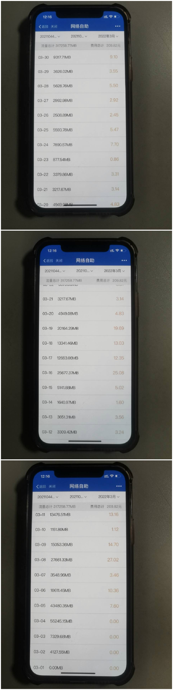

当人们都在为自己的校园网流量不够用而省吃俭用，卢神却一笑而过。因为这个男人早已到达了另一个境界。
2022年3月，是卢神的巅峰月份，是一个值得被后世铭记的月份。 在这个月里，卢嘉葳一共使用了 317258.77MB的校园网流量，网费达到了209.82元。前无古人，后难有来者，震古烁今。其中，在3月5日，卢嘉葳在当日使用了43480.35MB的流量，傲视全校。
就是这一天，使得卢嘉葳的一日流量使用量成为了肖健坤5月、6月使用的正无穷大倍，成为毫无争议的当世唯一真神。唯一有些美中不足的是，就差几百万个G就能超越大工其他所有人的流量之和了。 不过对于其他大工学生来说，真是幸运，因为卢狗刚开始发威，3月就结束了。